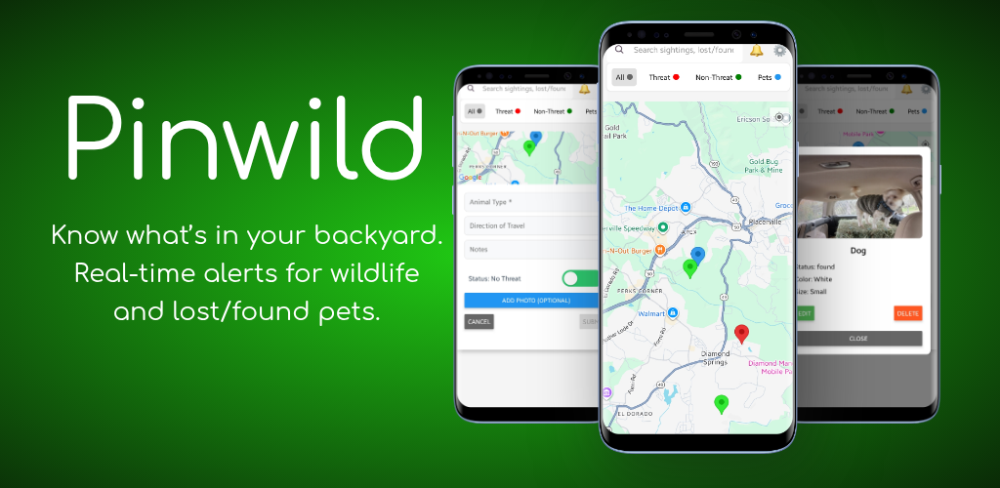

The Neighborhood Watch for Nature.
Real-time community tracking for wildlife sightings and lost pets. Know what's in your backyard before you step outside.
Download for Android Pinwild turns local knowledge into real-time protection for your family, pets and livestock. Stay informed about local predators and help neighbors reunite with missing pets.
Report sightings of both potentially dangerous wildlife like bears, mountain lions, hawks and coyotes and non-threats like bird sightings or deer. Identify threat levels, direction of travel, and attach photos to alert your community instantly.
Communication is key. Use the built-in note section on any pin to ask questions or provide live updates on an animal's location.
Help pets get home faster. Drop a precise pin and provide optional contact info so neighbors can reach out the moment a pet is lost or found.
Spotted something? Tap the map to identify the animal and share details with the community.
Set a custom alert zone (0-50 miles). You'll only get notified about sightings that affect your home.
Like pins to confirm sightings or add a note to keep neighbors updated in real-time.